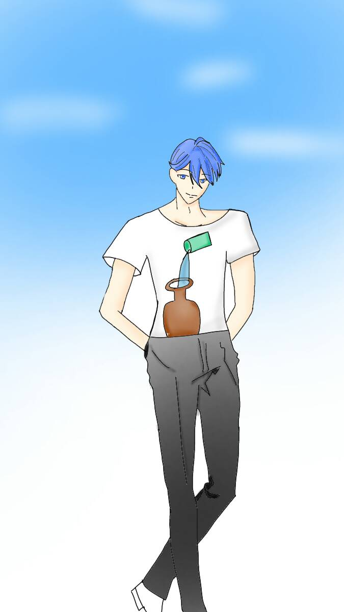

節制 Temperance
元素火
對應牌6戀人
對應星座射手座
牌義節制天使教導人們了解萬物的平衡之道。她頭上有兩對翅榜，
象徵高層自我和低層自我互相運作帶來的良好平衡感，她手上有兩個水瓶，
而他正把兩個瓶子的水互相倒來倒去，代表意識和無意識的交流，她一腳踏在路地
，一腳踏在水中，象徵著溝通，她的身後有一條道路，通往金色王冠的方位，象徵明確的目標，
如牌意所示，“平衡感”為牌意的肇因。也形成好的方向感。
關鍵語學習、超越、融合、創造、和諧★暗示帶著方感行動並且盡力而為
牌正面從過去的錯誤中學習，盡力而為，避免重蹈覆轍。
牌反面沒有目的的行為，重覆相同的錯誤，缺乏自我控制。
有不少學生跟我反應說節制牌總讓人感覺不慍不火，
在實際應用上似乎沒有太多的重點可以去解釋，其實會有這總感覺也很正常，
畢竟節制提倡的就是「中庸」，強調的是身心靈合一，當我們經歷過衝擊或是挑戰之後，
我們需要一個消化或淨化的過程，檢視著自己多餘的部分，然後從中索取自己缺少的地方，
最後昇華為如節制牌一般，而這種昇華卻不一定是顯現于外的，而是偏向于靈性與靈魂的安定與幸福。
節制牌對應射手座，在實際案例占卜當中可以應用在，旅行、國外事物、信念、哲理等。
離開卡牌